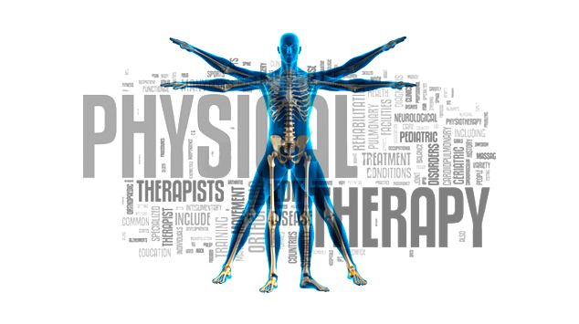

ST ELIZABETH PHYSICAL THEARPY
St Elizabeth physical therapy is here to help! We focus on getting your physical functions back when health problems make it hard to move around and do everyday tasks. Our physical therapy department is here to ultimately help you move better and to improve or restore your fitness level while working towards relieving your pain.
The goal of St. Elizabeth physical therapy is to make daily tasks and activities easier. For example, it may help you with walking, going up stairs, or getting in and out of bed.
St. Elizabeth physical therapy can also help with recovery after some surgeries. Your doctor may suggest physical therapy for injuries or long-term health problems such as arthritis or chronic obstructive pulmonary disease (COPD)
WHAT WILL A ST ELIZABETH THERAPIST DO?
Your St. Elizabeth physical therapist will examine and talk to you about your symptoms and your daily activity. He or she will then work with you on a treatment plan. The goals are to help your joints move better and to restore or increase your flexibility, strength, endurance, coordination, and/or balance.
First, your therapist will try to reduce your pain and swelling. Your physical therapist also may use manual therapy, education, and techniques such as heat, cold, water, ultrasound, and electrical stimulation.
Physical therapy almost always includes exercise. It can include stretching, core exercises, weight lifting, and walking. Your physical therapist may teach you an exercise program so you can do it at home.
 Appointment
Appointment  Physical Therapy
Physical Therapy  Lab Testing
Lab Testing  Weight Loss Program
Weight Loss Program  Chelation Therapy
Chelation Therapy  Hour of Operation:
8:00am-7:00pm MF,
9:00am-2:00pm Sat
Hour of Operation:
8:00am-7:00pm MF,
9:00am-2:00pm Sat
 713-482-4535
713-482-4535  713-482-4560
713-482-4560